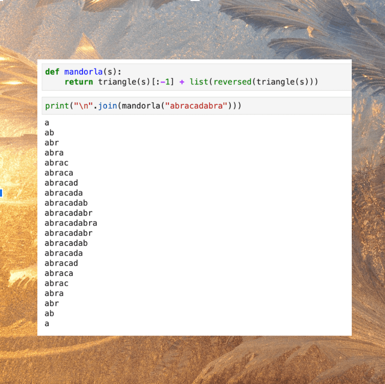

In a 1997 essay on jazz pianist Cecil Taylor’s album Chinampas, Fred Moten meditates on the space between words and sounds, following Taylor’s phrases into a place perhaps beyond the gestures of reading. “Where do words go?” asks Moten. “Are they the inadequate and residual traces of a ritual performance that is lost in the absence of the recording?” If we believe that certain sounds reside in a place that language can’t touch, what does this say about language? For Moten, this could imply that words are limited by “an absence of inflection; a loss of mobility, slippage, bend...”1 During Allison Parrish’s second class on the possibilities of magical and divinatory language, we explored ways that computation can transform language, giving words the “mobility, slippage, bend” that they may lack in their everyday usage, and thus (perhaps) making space for the invocation of magic.
Allison defined magic words as “a string of letters that affords a foregrounding of its material properties (e.g., spelling, pronunciation), and suggests some effect beyond meaning alone.” By working with Allison’s Speculative Magic Words Workbook, we explored formal computational techniques for generating these magic words, including code that “smooshes” together parts of words, dislocates words within strings of text, and applies substitution ciphers to various letters.
As Allison noted in her first class with us, the concept of magic she works with is situated within certain traditions of European medieval thought as well as American Mormonism. While going through the exercises in the workbook, I was interested in the underlying rationale for why something would be seen as magical or protective within these frameworks. For example, we discussed how 15th-century medieval artists used backwards or “retrograde” text to depict demonic writing. Repeatedly, we ran into the idea, rooted in European mythologies, that words which were scrambled or otherwise nonlinear belonged to the realm of the devil, the occult, the taboo.
These ideas made me think about modern-day depictions of scrambled, "incorrect," or non-English text, and the ways they are often associated with disability or strangeness within a white supremacist, ableist culture. The popular "mocking Spongebob" meme uses mixed capitalization to depict an idea that is supposedly laughable or ridiculous. As many disability justice organizers and other thinkers have pointed out, this meme draws on ableist frameworks which depict disfigured faces, uneven vocal patterns, and writing difficulties as signs of unintelligence. In another recent example, memes circulated on social media which used Amharic text as a way to represent alien or extraterrestrial language. What are the connections between European notions of the strange/otherworldly, and colonial traditions of xenophobia and ableism? When playing with possibilities for creating magic words, can we honor the long intertwined histories of disability and anticolonial divination?2 When we are fucking with linguistic conventions as a way to open up magic space, how can we pay homage to the folks who have long been persecuted and oppressed for fucking with language first?
This series of exercises also made me interested to continue personally exploring the place of words and language within Black spiritual practices. The examples we worked with may have been predicated on colonial Christian notions of value and morality, but I would like to keep thinking about the ways magic language has been used by those whose dialects, vocabularies, and phrasing have always been deemed perverse or occult within a European imaginary.
Before class, we had all created ideas for oracle cards based on our experiences and histories. The symbols and interpretations that we had written lived in a spreadsheet that we would use to complete an exercise in Allison's workbook. When we reached that part of the class, many of our computers began having technical difficulties with downloading the Python modules, TensorFlow and Pincelate. As I asked for and received help and laughed about an unsuccessful set of terminal commands that caused me to lag behind Allison's set of instructions, I was reminded of one of the ways that SFPC has helped to reconfigure my approach to learning. Here, admitting that you do not understand, that you are falling short of what you wanted to do and need the support of others, is a magic act of naming in itself. A way of creating the communities of learning and care that you may have been searching for. A way of refusing educational standards that expect us to not ask, not desire, to not honor the needs of our own minds and bodies, to not admit places of confusion or unknowing.
In the end, Allison uploaded the workbook to a web platform which we then used to generate a group of oracle card meanings drawn from our collectively organized spreadsheet data. As we took turns reading the phrases, we were struck by the silliness and profundity of what our computers had created together with us.